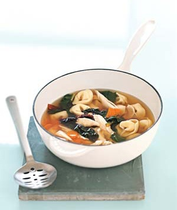
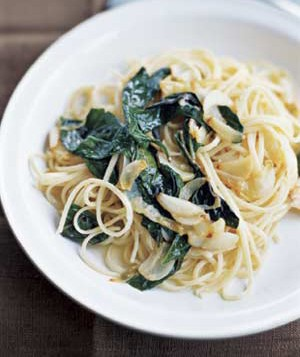
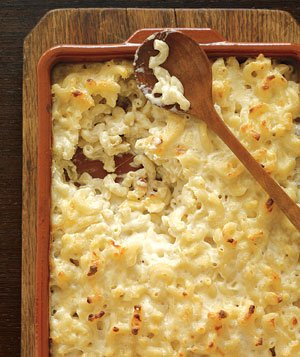
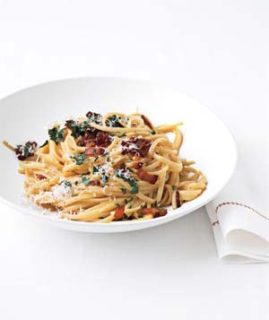
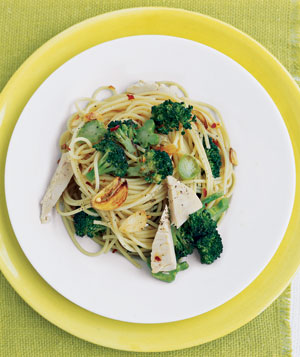

Jim's Meals on Wheels

Menu
Best food on four wheels
Broccoli Spaghetti

Ingredients
- 1 pound spaghetti
- 1 large head broccoli (1/2 pound)
- 1/4 cup olive oil
- 2 garlic cloves, thinly sliced
- 1/2 teaspoon kosher salt
- 1/2 rotisserie chicken, meat shredded (2 cups)
- freshly ground black pepper
- 1/2 teaspoon red pepper flakes
A taste Italian treat
Macaroni and Cheese

Ingredients
- 5 tablespoons butter, plus more for the baking dish
- 1 pound elbow macaroni
- 1/2 cup all-purpose flour
- 6 cups whole milk
- 2 cups grated Gruyere (8 ounces)
- 1 1/2 cups grated Cheddar (6 ounces)
- 1/4 teaspoon cayenne pepper
- Kosher salt
A taste Italian treat
Pasta Carbonara

Ingredients
- 1 pound linguine or spaghetti
- 6 strips bacon, diced
- 4 egg yolks
- 1 cup grated Parmesan
- 1/2 teaspoon kosher salt
- 1/4 teaspoon black pepper
- 1/2 cup fresh flat-leaf parsley, chopped
A taste Italian treat
Tortellini Soup

Ingredients
- 1 3 1/2- to 4-pound chicken, cut into 8 pieces
- 6 cups low-sodium chicken broth
- 2 carrots, cut into thin rounds
- 1/2 bunch Swiss chard, cut crosswise into 1-inch strips
- 1 8- to 9-ounce package tortellini, preferably vegetable
- 3/4 teaspoon kosher salt
- 1/4 teaspoon black pepper
- 1/4 cup (1 ounce) grated Parmesan
A taste Italian treat
Linguine Marvini

Ingredients
- 1 pound thin linguine
- 3 tablespoons olive oil
- 20 cloves garlic, peeled and thinly sliced
- 1/2 cup butter, cut in small pieces
- 1 tablespoon fresh lemon juice
- 1 teaspoon kosher salt
- 1/4 teaspoon freshly ground black pepper
- 6 tablespoons freshly grated Parmesan
- several sprigs fresh basil (about 14 leaves)
A taste Italian treat